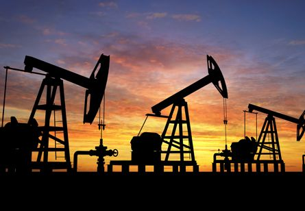
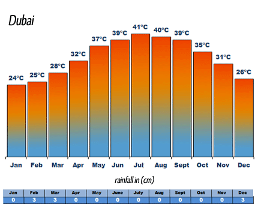

Dubai is the most populated city in the united arab emerates.The estimated population is 2.5 millon. It is located on the southeast coast of the Persian Gulf and is the capital of the Emirate of Dubai, one of the seven emirates that make up the country. Dubai is considered one of the safest cities in the world with a 0% crime rate.Some of the world’s tallest and biggest structures are situated here which attracts many tourists and visitors.Dubai has one of the world’s fastest growing economies, with a growth rate of 6.1% in 2014. .

Before tourism, Dubai made its money with oil. Before Fishing, farming and pearl diving were the emirate’s main trades. In the early 20th century there were was pearl diving based in Dubai Creek, with over 7,000 sailors on board
The Emirate's Western-style model of business drives its economy with the main revenues now coming from tourism, aviation, real estate, and financial services. Dubai was recently named the best destination for Muslim travellers by Salam Standard. Dubai has recently attracted world attention through many innovative large construction projects and sports events. The city has become iconic for its skyscrapers and high-rise buildings, in particular the world's tallest building, the Burj Khalifa. Dubai has been criticised for human rights violations concerning the city's largely South Asian and Filipino workforce. Dubai's property market experienced a major deterioration in 2008–09 following the financial crisis of 2007–08,but the emirate's economy has made a return to growth, with a projected 2015 budget surplus.
As of 2012, Dubai was the 22nd most expensive city in the world and the most expensive city in the Middle East. In 2014, Dubai's hotel rooms were rated as the second most expensive in the world, after Geneva. In 2013, U.S. global consulting firm Mercer rated Dubai the best place to live in the Middle East.
Dubai's geographical proximity to Iran made it an important trade location. The town of Dubai was an important port of call for foreign tradesmen, chiefly those from Iran, many of whom eventually settled in the town. By the beginning of the 20th century, it was an important port.
Dubai's geographical proximity to Iran made it an important trade location. The town of Dubai was an important port of call for foreign tradesmen, chiefly those from Iran, many of whom eventually settled in the town. By the beginning of the 20th century, it was an important port.
Dubai was known for its pearl exports until the 1930s the pearl trade was damaged irreparably by the Great Depression in the 1930s and the innovation of cultured pearls. With the collapse of the pearling industry, Dubai fell into a deep depression and many residents starved or migrated to other parts of the Persian Gulf.
The Al Ras district in Deira, Dubai in the 1960s
In the early days since its inception, Dubai was constantly at odds with Abu Dhabi. In 1947, a border dispute between Dubai and Abu Dhabi on the northern sector of their mutual border escalated into war. Arbitration by the British and the creation of a buffer frontier running south eastwards from the coast at Ras Hasian resulted in a temporary cessation of hostilities.
Despite a lack of oil, Dubai's ruler from 1958, Sheikh Rashid bin Saeed Al Maktoum, used revenue from trading activities to build infrastructure. Private companies were established to build and operate infrastructure, including electricity, telephone services and both the ports and airport operators. An airport of sorts (a runway built on salt flats) was established in Dubai in the 1950s and, in 1959, the emirate's first hotel, the Airlines Hotel, was constructed. This was followed by the Ambassador and Carlton Hotels in 1968.
On 7 April 1961, the Dubai-based MV Dara, a five thousand ton British flagged vessel that plied the route between Basra (Iraq), Kuwait and Bombay (India), was caught in unusually high winds off Dubai. Early the next morning in heavy seas off Umm al-Quwain, an explosion tore out the second class cabins and started fires. The captain gave the order to abandon ship but two lifeboats capsized and a second explosion occurred. A flotilla of small boats from Dubai, Sharjah, Ajman and Umm al-Quwain picked up survivors but in all 238 lives were lost in the disaster.

n 1962 the British Political Agent noted that "Many new houses and blocks of offices and flats are being built... the Ruler is determined, against advice [from the British] to press on with the construction of a jet airport... More and more European and Arab firms are opening up and the future looks bright."
In 1962, with expenditure on infrastructure projects already approaching levels some thought imprudent, Sheikh Rashid approached his brother in law, the Ruler of Qatar, for a loan to build the first bridge crossing Dubai's creek. This crossing was finished in May 1963 and was paid for by a toll levied on the crossing from the Dubai side of the creek to the Deira side.
BOAC was originally reluctant to start regular flights between Bombay and Dubai, fearing a lack of demand for seats. However, by the time the asphalt runway of Dubai Airport was constructed in 1965, opening Dubai to both regional and long haul traffic, a number of foreign airlines were competing for landing rights. In 1970 a new airport terminal building was constructed which included Dubai's first duty-free shops.

Dubai has a hot desert climate. Summers in Dubai are extremely hot, windy, and humid, with an average high around 41 °C (106 °F) and overnight lows around 30 °C (86 °F) in the hottest month, August. Most days are sunny throughout the year. Winters are warm with an average high of 24 °C (75 °F) and overnight lows of 14 °C (57 °F) in January, the coldest month. Precipitation, however, has been increasing in the last few decades, with accumulated rain reaching 94.3 mm (3.71 in) per year.[58] Dubai summers are also known for the moderate to high humidity level, which can make it uncomfortable for many.[59] The highest recorded temperature in the UAE is 52.1 °C (126 °F), reached in July 2002. 